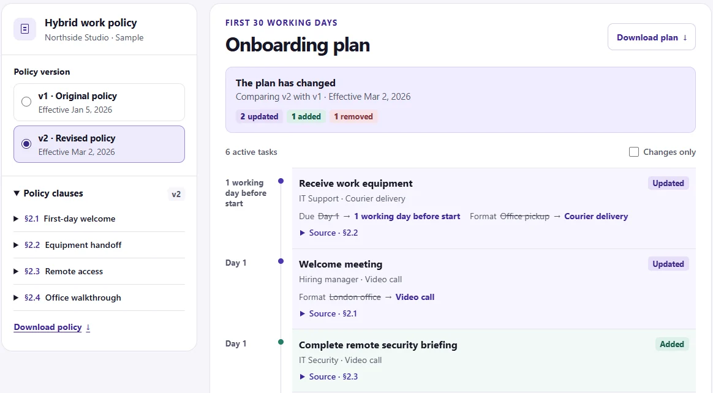

HR operations · Employee onboarding
People Onboarding Lab
I built an interactive demo that shows how a policy revision changes a new hire’s first 30 working days.

What you can try
Switch between two fictional hybrid work policies. The revised version updates two tasks, adds a security briefing and removes the standard office walkthrough. Open Source to compare clauses, or download the updated plan with its source references.
How it works
The demo applies a fixed set of rules in the browser. It compares tasks by ID and shows changes to the due date, owner or format. It needs no account or API key.
Use it with your own documents
The repository includes three skills for Codex and Claude. Use them to compare policy versions, build an onboarding plan and turn employee feedback into proposed changes.